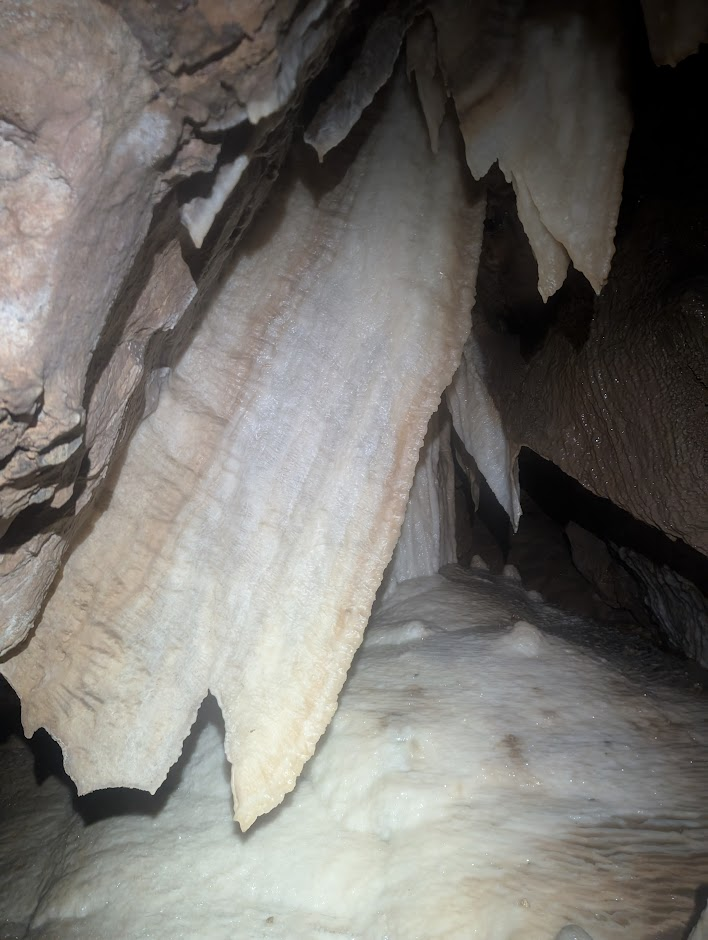

Feature Story
Jenolan-Kempsey Big Trip
Another one of NUCC's big end of year trips. This time, it saw us going to Jenolan to meet up with SUSS for a couple of days of caving in Barralong (helping dive trips), Wiburds and Mammoth (survey work and fun); then heading up north to Kempsey, where we checked out caves in and around the Kookaburra and Moparabah areas.
Day 2 (Jenolan: Barralong/Wiburds) Monday 1/12: Iain and Olaf with Kier, Rod, Mark and Simon (SUSS) to help carry dive gear into Barralong Cave. Visited all the Oolite pools at the rear end of the cave.
Day 5 (Jenolan: Show Caves/Mammoth) Thursday 4/12: Another lazy day for most, as we waited for Peta to return. Iain and Olaf visited the Show-cave system to investigate water quality after the recent dive work and rain.